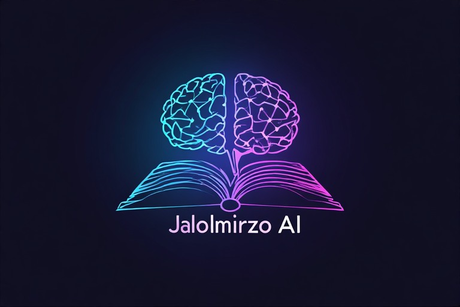

🚀 Yangi loyiha
🤖 Jalolmirzo AI — Maktabning intellektual yordamchisi
41-Maktab o'quvchilari uchun maxsus ishlab chiqilayotgan sun'iy intellekt tizimi ishga tushdi!
✨ Hozirgi imkoniyatlar:
- 🔵 ODDIY rejim — 100 so'rov/kun, tezkor javob
- 🟣 PRO rejim — 25 so'rov/kun, kuchliroq model
- 💻 Kod so'ralganda chiroyli formatda ko'rsatish va copy tugmasi
- ⚡ 512 MB kesh tizimi — tez javoblar
- 📋 Chat tarixi saqlanadi, yangi suhbat boshlash imkoni
- 👑 Admin panel — logo ga 5 marta bosish
🔮 Yaratilish tarixi:
Jalolmirzo AI — 41-Maktab admini Latifjonov Jalolmirzo tomonidan 2025-yilda yaratilgan. Dastlab oddiy API ulagich sifatida boshlangan loyiha, doimiy rivojlanish natijasida hozirda 2 xil rejim, kesh tizimi va 13 xil API kalit bilan ishlaydigan kuchli tizimga aylandi. Maqsad — maktab o'quvchilariga eng tez va sifatli AI xizmatini bepul taqdim etish.
📈 Kelajakda yaratiladigan modellar va imkoniyatlar:
- 🎯 v1.5 (hozirgi) — 8 mlrd parametrli Llama 3.1 modeli, tezkor javob
- 🎯 v2.0 — Qwen-3-235B-A22B-Instruct-2507 (235 mlrd parametr) modeli qo'shiladi. PRO rejimda limitlar qisqaradi, ammo javob sifati keskin oshadi
- 🎯 v3.0 — 70 mlrd parametrli o'zbek tilidagi maxsus model yaratiladi. Bu model o'zbek tilini mukammal tushunadi, ChatGPT va Gemini kabi uzluksiz suhbat olib boradi
- 🎯 v4.0 — Multi-modal imkoniyat: rasm, document (PDF, Word), ovoz bilan ishlash. Rasmdagi matnni o'qish, hujjatlarni tahlil qilish
- 📊 Account tizimi — shaxsiy kabinet, limitlarni oshirish, reyting jadvali
- 🔗 Telegram bot integratsiyasi — AI bilan Telegram orqali ham suhbatlashish imkoniyati
🧠 Nega aynan shu modellar?
• 8 mlrd parametr — hozirgi versiya, tezlik va sifat balansi
• 235 mlrd parametr (Qwen) — dunyodagi eng kuchli ochiq modellardan biri, murakkab masalalarni yechishda yuqori aniqlik
• 70 mlrd parametr (o'zbek modeli) — o'zbek tiliga maxsus moslashtirilgan, ChatGPT darajasida suhbat
• Multi-modal — faqat matn emas, rasm va hujjatlar bilan ishlash
• 8 mlrd parametr — hozirgi versiya, tezlik va sifat balansi
• 235 mlrd parametr (Qwen) — dunyodagi eng kuchli ochiq modellardan biri, murakkab masalalarni yechishda yuqori aniqlik
• 70 mlrd parametr (o'zbek modeli) — o'zbek tiliga maxsus moslashtirilgan, ChatGPT darajasida suhbat
• Multi-modal — faqat matn emas, rasm va hujjatlar bilan ishlash
⚠️ Hozirgi kamchiliklar:
• Model 8 mlrd parametrli — o'zbek tilini to'liq tushunmaydi, ba'zi savollarga lug'aviy so'z xatolari bilan javob berishi mumkin
• Chatda yozishmalar saqlanmaydi — har bir so'rovda qayta tushuntirish kerak
• ChatGPT yoki Gemini kabi uzluksiz suhbat olib bora olmaydi
• Rasm va hujjatlar bilan ishlash imkoniyati yo'q
✅ Bu kamchiliklar keyingi versiyalarda to'liq bartaraf etiladi!
• Model 8 mlrd parametrli — o'zbek tilini to'liq tushunmaydi, ba'zi savollarga lug'aviy so'z xatolari bilan javob berishi mumkin
• Chatda yozishmalar saqlanmaydi — har bir so'rovda qayta tushuntirish kerak
• ChatGPT yoki Gemini kabi uzluksiz suhbat olib bora olmaydi
• Rasm va hujjatlar bilan ishlash imkoniyati yo'q
✅ Bu kamchiliklar keyingi versiyalarda to'liq bartaraf etiladi!
🎯 Maqsad:
41-Maktab o'quvchilariga dunyodagi eng ilg'or AI texnologiyalarini bepul va qulay shaklda yetkazish. Kelajakda o'zbek tilida mukammal gaplashadigan, rasm va documentlar bilan ishlaydigan, har bir o'quvchiga moslashuvchan intellektual yordamchi yaratish.
📢 Qoidalar va to'g'ri foydalanish:
• ODDIY rejim — kundalik savollar, testlar, uy vazifalari uchun
• PRO rejim — murakkab masalalar, kod yozish, ilmiy savollar uchun
• Har bir foydalanuvchi kunlik limitga ega (100/25 so'rov)
• Limit tugagach, ertasi kuni qayta tiklanadi
• Chat tarixi brauzer xotirasida saqlanadi, sahifa yopilganda ham qoladi
🤖 AI bilan suhbatlashish
• ODDIY rejim — kundalik savollar, testlar, uy vazifalari uchun
• PRO rejim — murakkab masalalar, kod yozish, ilmiy savollar uchun
• Har bir foydalanuvchi kunlik limitga ega (100/25 so'rov)
• Limit tugagach, ertasi kuni qayta tiklanadi
• Chat tarixi brauzer xotirasida saqlanadi, sahifa yopilganda ham qoladi